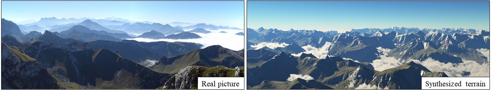

Axel Paris - PhD Student in Computer Graphics
Home
Publications
Resume
Email
Twitter
Orometry-based terrain analysis and synthesis
January 12, 2020.

Preprint
PDF
Supplementary Material
Video
Code
Mountainous digital terrains are an important element of many virtual environments and find application in games, film, simulation and training.
Unfortunately, while existing synthesis methods produce locally plausible results they often fail to respect global structure.
This is exacerbated by a dearth of automated metrics for assessing terrain properties at a macro level.
We address these issues by building on techniques from orometry, a field that involves the measurement of mountains and other relief features.
First, we construct a sparse metric computed on the peaks and saddles of a mountain range and show that, when used for classification, this is capable
of robustly distinguishing between different mountain ranges. Second, we present a synthesis method that takes a coarse elevation map as input and
builds a graph of peaks and saddles respecting a given orometric distribution. This is then expanded into a fully continuous elevation function by
deriving a consistent river network and shaping the valley slopes. In terms of authoring, users provide various control maps and are also able to edit,
reposition, insert and remove terrain features all while retaining the characteristics of a selected mountain range. The result is a terrain analysis
and synthesis method that considers and incorporates orometric properties, and is, on the basis of our user study, more visually plausible than existing
terrain generation methods.
@article{Argudo2019Orometry,
author = {Argudo, Oscar and Galin, Eric and Peytavie, Adrien and Paris, Axel and Gain, James and Gu\'{e}rin, Eric},
title = {Orometry-based Terrain Analysis and Synthesis},
journal = {ACM Transactions on Graphics (SIGGRAPH Asia 2019)},
volume = {38},
number = {6}
}